Selected publications
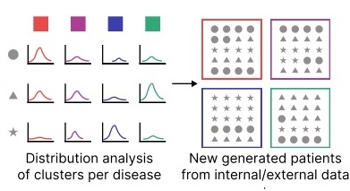
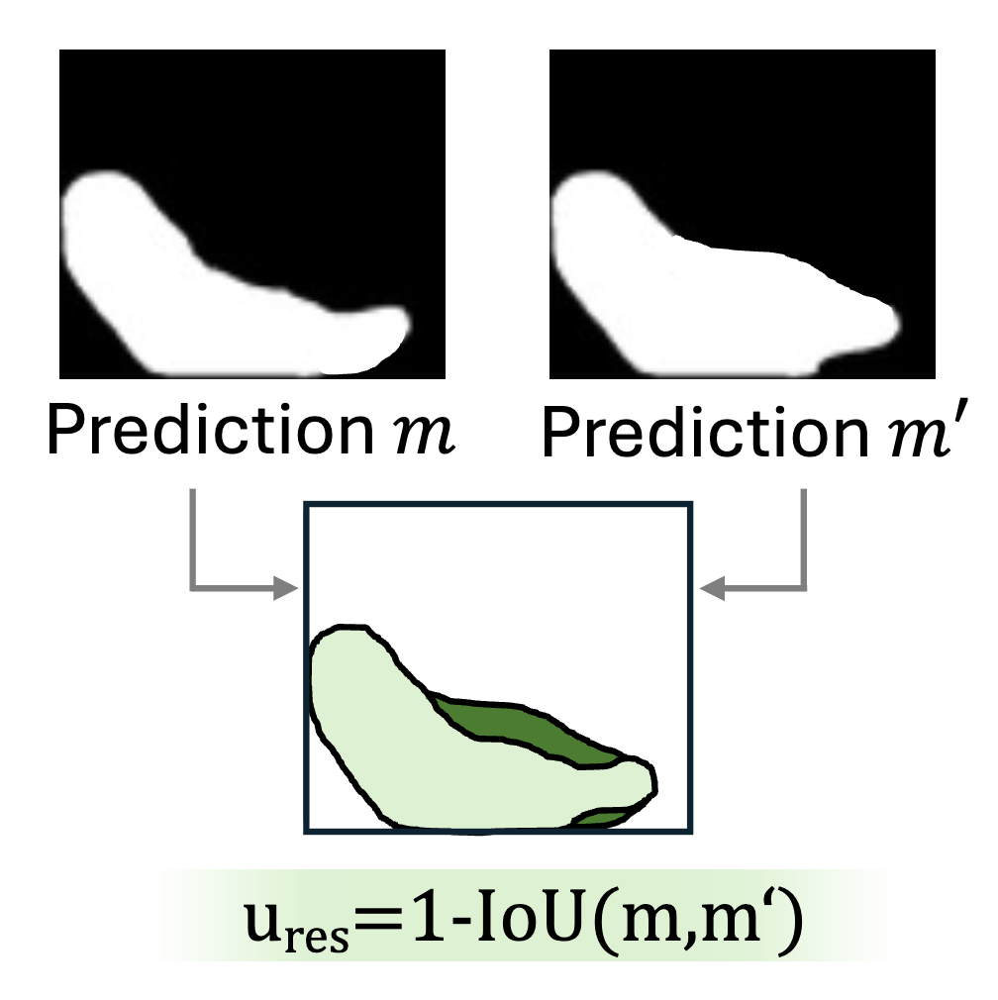
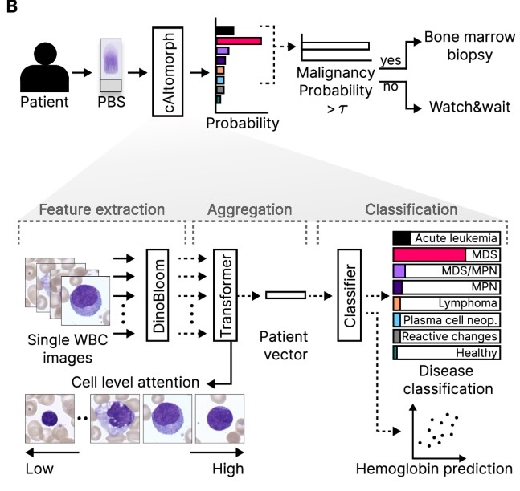
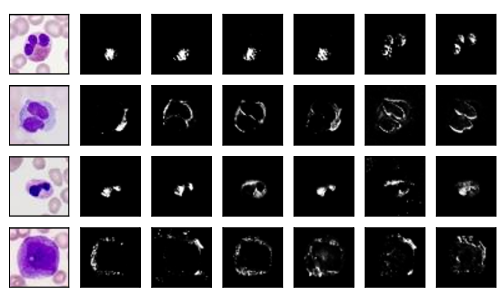
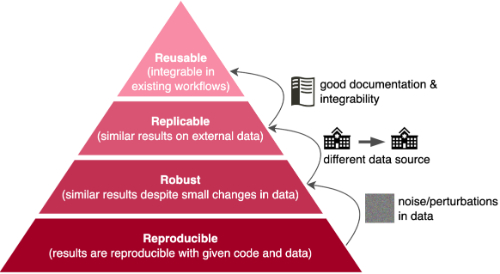
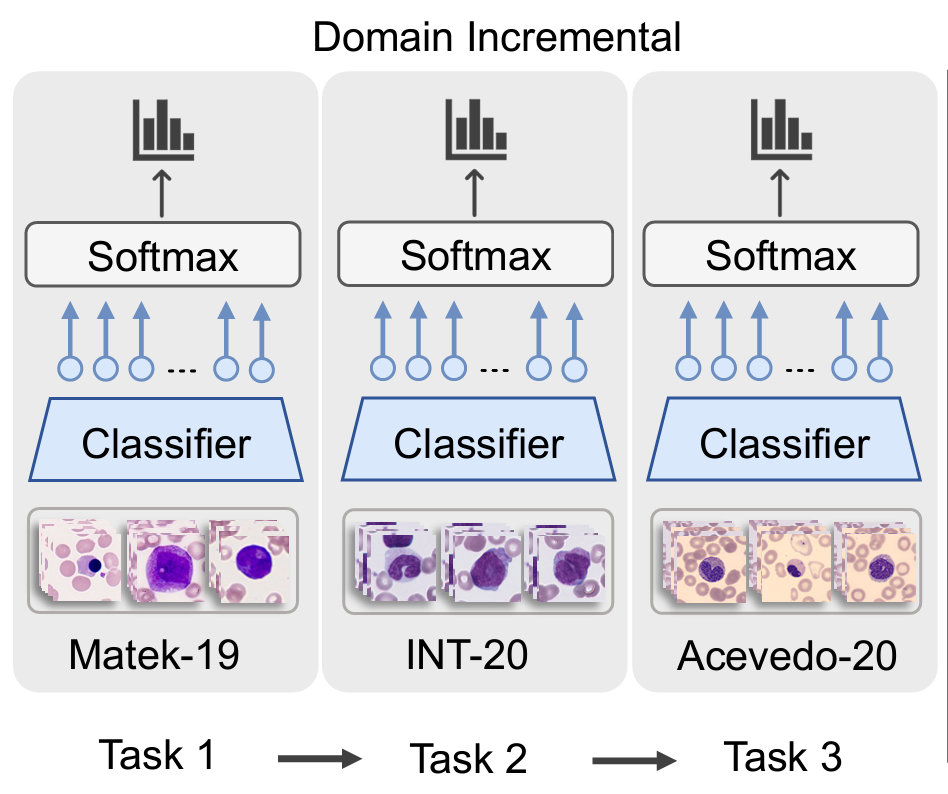
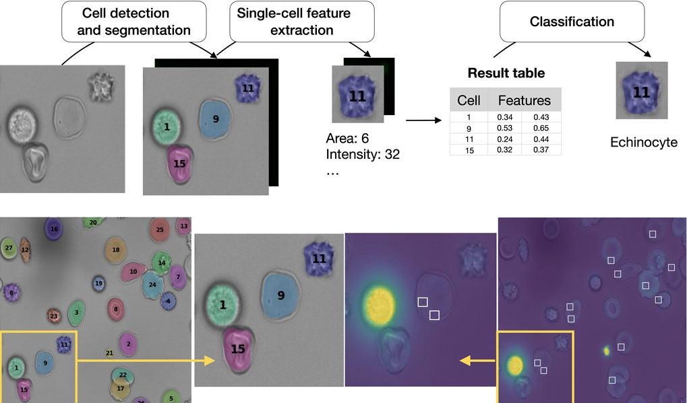
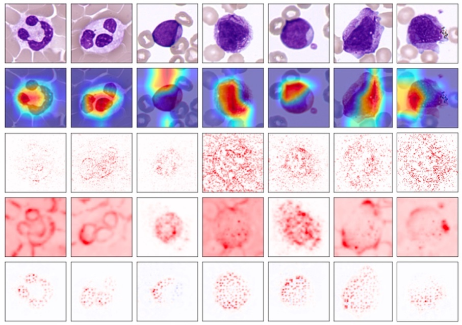
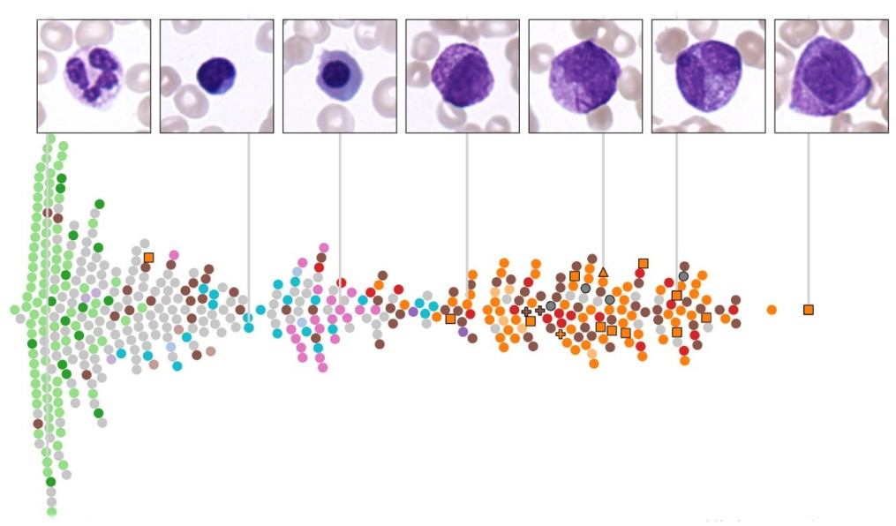
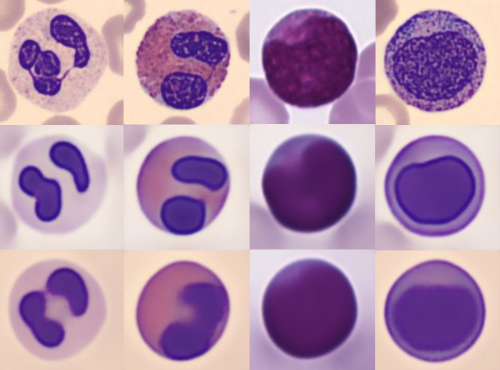
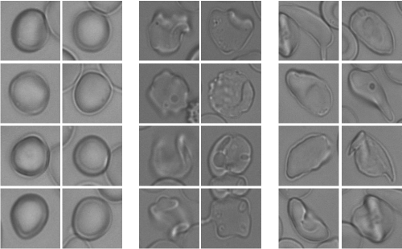
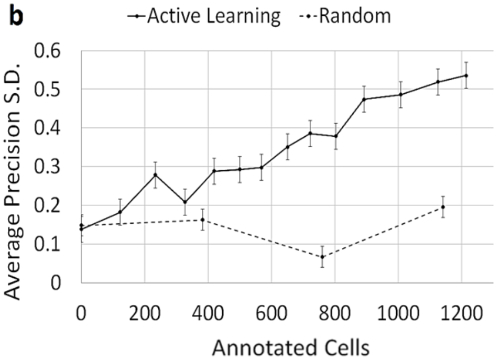
For the complete list please visit my Google Scholar profile.
-
Re-mixing Embeddings for Patient Augmentation in Data Scarce Multiple Instance Learning
Medical Image Computing and Computer Assisted Intervention (MICCAI), 2026
-
Measuring Prediction Uncertainty in Neural Cellular Automata
Medical Image Computing and Computer Assisted Intervention (MICCAI), 2026
-
Neural Cellular Automata for Lightweight, Robust and Explainable Classification of White Blood Cell Images
Medical Image Computing and Computer Assisted Intervention (MICCAI), 2024
-
Built to last? Reproducibility and Reusability of Deep Learning Algorithms in Computational Pathology
Modern Pathology 37, 2024
-
A Continual Learning Approach for Cross-Domain White Blood Cell Classification
DART workshop at Medical Image Computing and Computer Assisted Intervention (MICCAI), 2023
Best Paper Award -
RedTell: an AI tool for interpretable analysis of red blood cell morphology
Frontiers in Physiology 14, 2023
-
Pixel-Level Explanation of Multiple Instance Learning Models in Biomedical Single Cell Images
Information Processing in Medical Imaging (IPMI) 2023
-
Explainable AI Identifies Diagnostic Cells of Genetic AML Subtypes
PLOS Digital Health, 2023
-
Unsupervised Cross-Domain Feature Extraction for Single Blood Cell Image Classification
Medical Image Computing and Computer Assisted Intervention (MICCAI), 2022
-
Attention based Multiple Instance Learning for Classification of Blood Cell Disorders
Medical Image Computing and Computer Assisted Intervention (MICCAI), 2020
-
Multiclass Deep Active Learning for Detecting Red Blood Cell Subtypes in Brightfield Microscopy
Medical Image Computing and Computer Assisted Intervention (MICCAI), 2019
Datasets
-
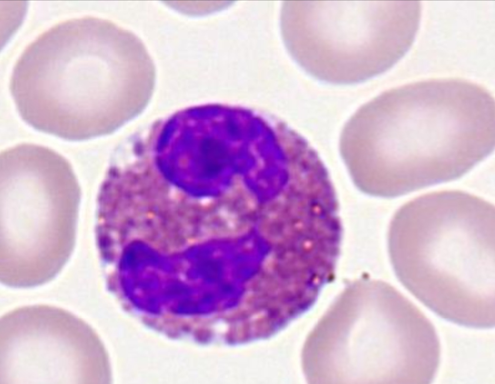
A Morphological Dataset of White Blood Cells from Patients with Four Different Genetic AML Entities and Non-Malignant ControlsThe Cancer Imaging Archive, 2023
-
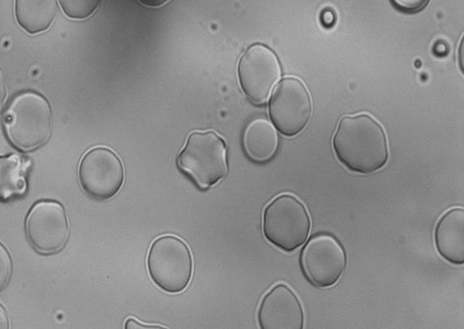
Red Blood Cell RedTell DatasetZenodo, 2023